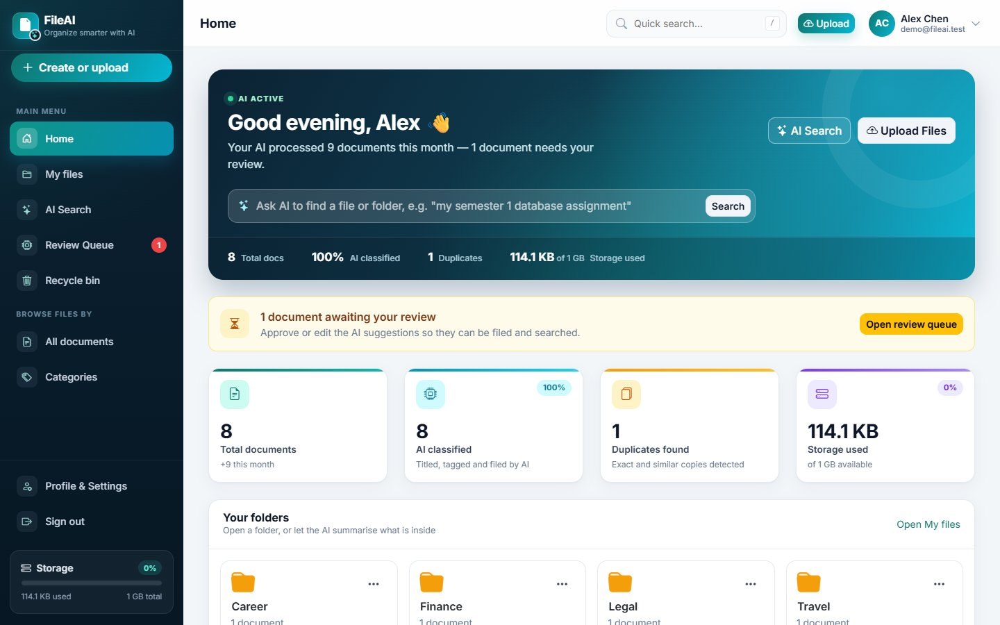
This manual explains how to use FileAI. It is written for people who will store their own documents in the
application — students and professionals — and does not assume any technical knowledge. Installing and starting the
servers is covered in the separate Student Guide (STUDENT_GUIDE.md in the project), and the
technical design is in the Technical Implementation Document and the docs/ folder.
Screenshots were taken from the running application with the built-in demo account. Names, dates and numbers in your own account will be different.
Most people keep hundreds of files spread over laptops and cloud drives. Sorting them means creating folders by hand, renaming files and remembering exact filenames. Scanned documents cannot be searched at all, and duplicate copies pile up.
FileAI does the filing for you. When you upload a document it:
University / Year 2 / Semester 1 / Database Systems);| Item | Requirement |
|---|---|
| Web browser | A current version of Google Chrome, Microsoft Edge or Mozilla Firefox |
| Screen | Laptop or desktop recommended. Phones and tablets work too — the menu opens with the ☰ button. |
| An email address you can read, for the sign-in codes | |
| Files | PDF, DOCX, TXT, PNG or JPG, up to 20 MB each. Each account has 1 GB of storage. |
http://localhost:5173.For demonstrations the app comes with a ready-made account that already contains nine sample documents:
demo@fileai.test | |
| Password | Demo@12345 |
! or @.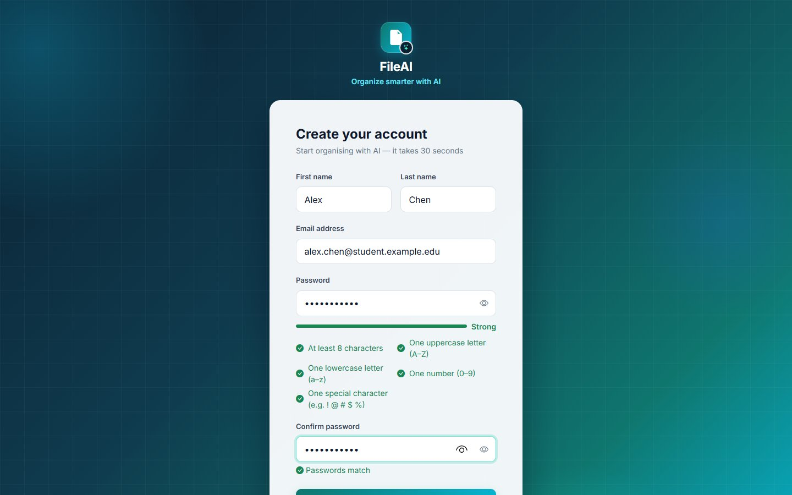
Signing in has two steps, so a stolen password alone is not enough to open your account.
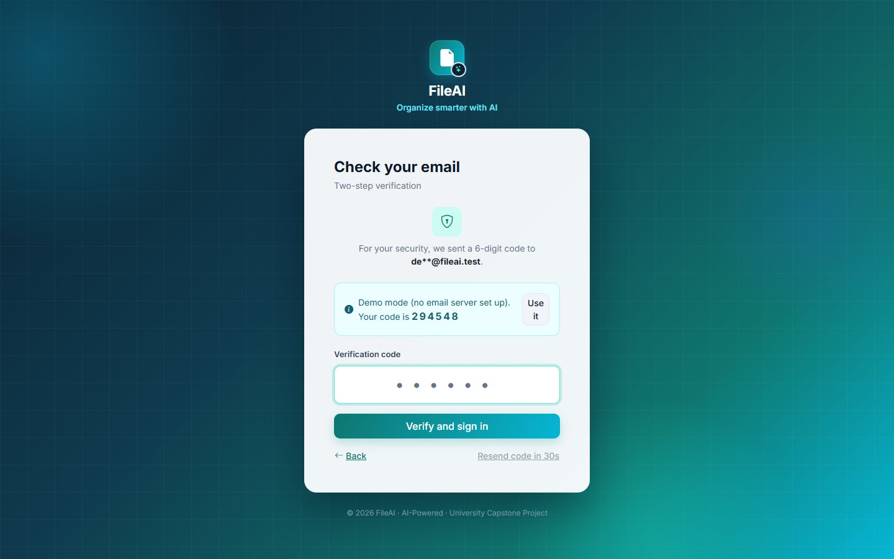
| Situation | What to do |
|---|---|
| The email has not arrived | Check your junk/spam folder. After 30 seconds you can click . |
| "That code is not correct" | Check the digits and try again. After 5 wrong codes the code is cancelled — click . |
| "This code has expired" | Codes work for 10 minutes and only once. Click . |
| Demo mode banner | No email server is set up. Click to copy the code shown on screen into the box. |
| Wrong email address | Click to return to the first step. |
FileAI is laid out like Microsoft OneDrive. The menu on the left is always visible (on a phone, tap ☰ to open it). The top bar shows the page name, a quick search box (press / to jump to it), an Upload button and your account menu.
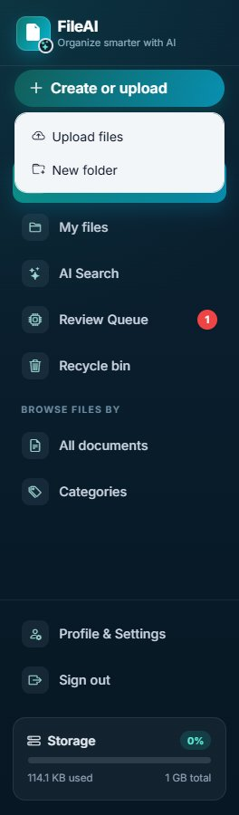
| Menu item | What it is for |
|---|---|
| Upload files or create a New folder | |
| Your overview: AI search, totals, your folders and your recent files (section 6) | |
| Browse, create, rename, delete and summarise folders and files (section 9) | |
| Find files and folders by describing them (section 11) | |
| Uploads waiting for your approval; the red number shows how many (section 14) | |
| Deleted files, which you can restore (section 13) | |
| Every file in one list with filters for category, type, folder and status | |
| Your files grouped by the AI's categories (University, Finance, Career, …) | |
| Your name, email, password and storage (section 15) |
The Storage box at the bottom of the menu shows how much of your 1 GB you are using.
Home is the first page after you sign in. From top to bottom it shows:
One tile for each of your top-level folders, with the number of documents inside (including subfolders).
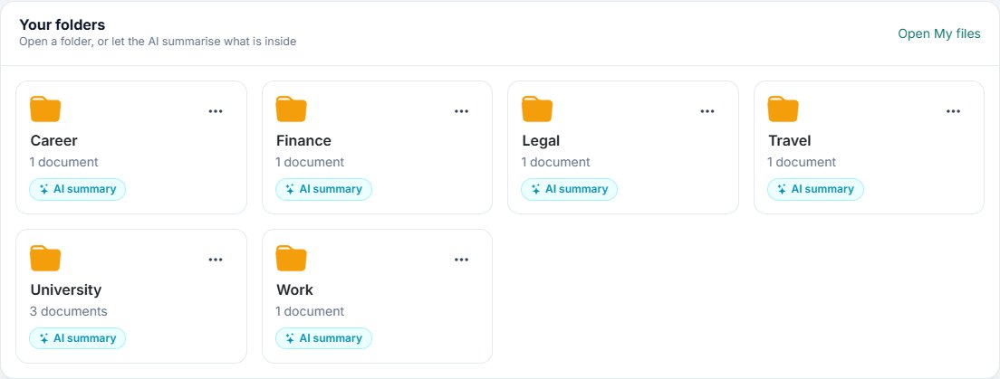
Like OneDrive, Home lists the files you uploaded or changed most recently: Name, Modified, Location (click it to open the folder) and Size.
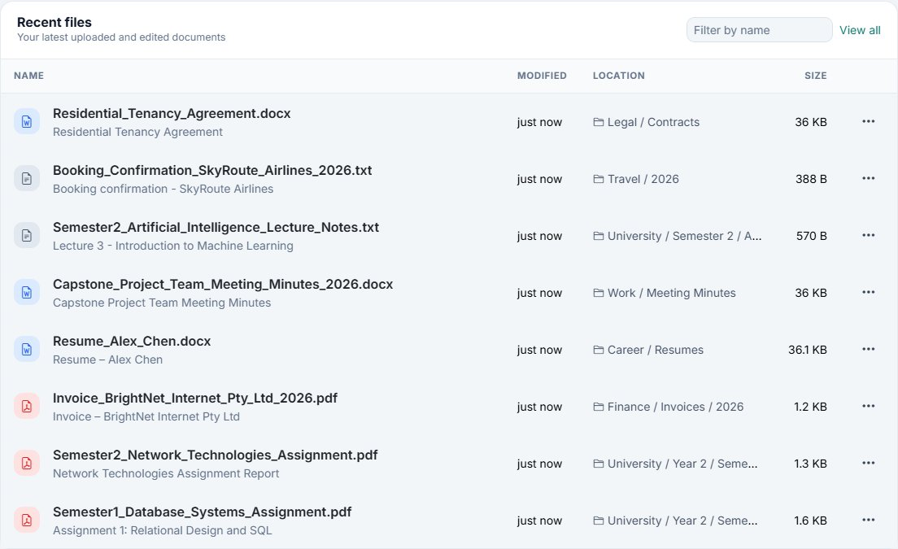
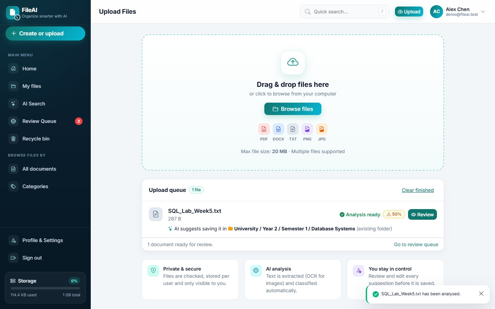
| Message | Meaning |
|---|---|
| Unsupported file format | Only PDF, DOCX, TXT, PNG and JPG can be uploaded. |
| The file is too large | Each file can be at most 20 MB. |
| You already have this file | An identical copy is already stored. Choose or . |
| Your storage is full | Delete files you no longer need and empty the Recycle bin. |
| OCR is not installed | Text in images and scans can't be read on this server. You can still type the details yourself on the review page. |
The review page shows everything the AI worked out. Nothing is saved until you click Approve & Save, so you always stay in control.
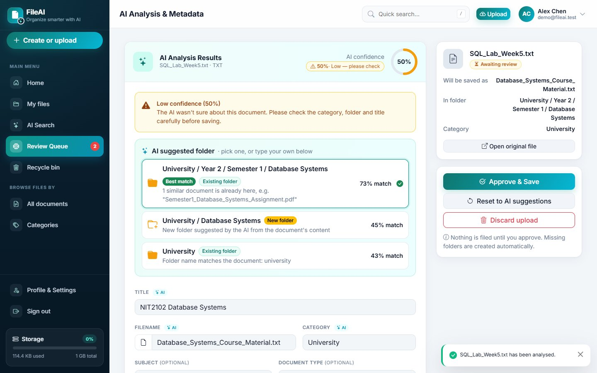
The AI looks at the folders you already have and recommends the best one, with the reason:
The best match is labelled Best match and is already selected. A New folder is only recommended first when none of your folders fits. Click any option to choose it, or type your own folder in the Folder field — missing folders are created for you.
| Field | What it is |
|---|---|
| Title | A clear, readable name for the document |
| Filename | The name the file is saved under, e.g. Semester1_Database_Systems_Assignment.pdf |
| Category | University, Finance, Career, Health, Legal, Travel, Work, Personal or Other |
| Subject / Document type | e.g. Database Systems / Assignment (optional) |
| Keywords | Words used by search. Press Enter to add one, click × to remove one. |
| Summary | One or two sentences about the document |
is the file explorer. Folders are listed first, then the files in the open folder.
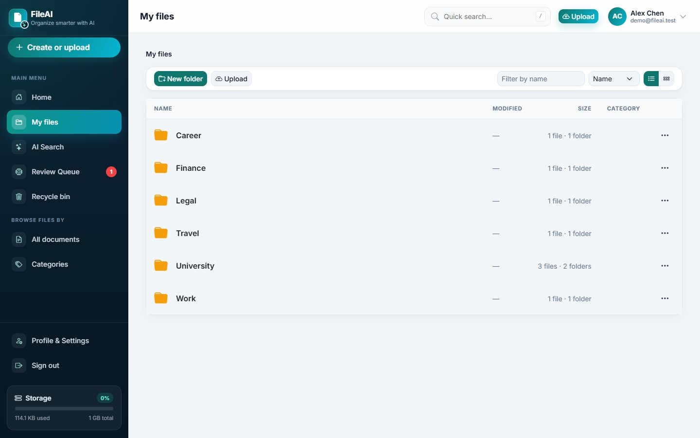
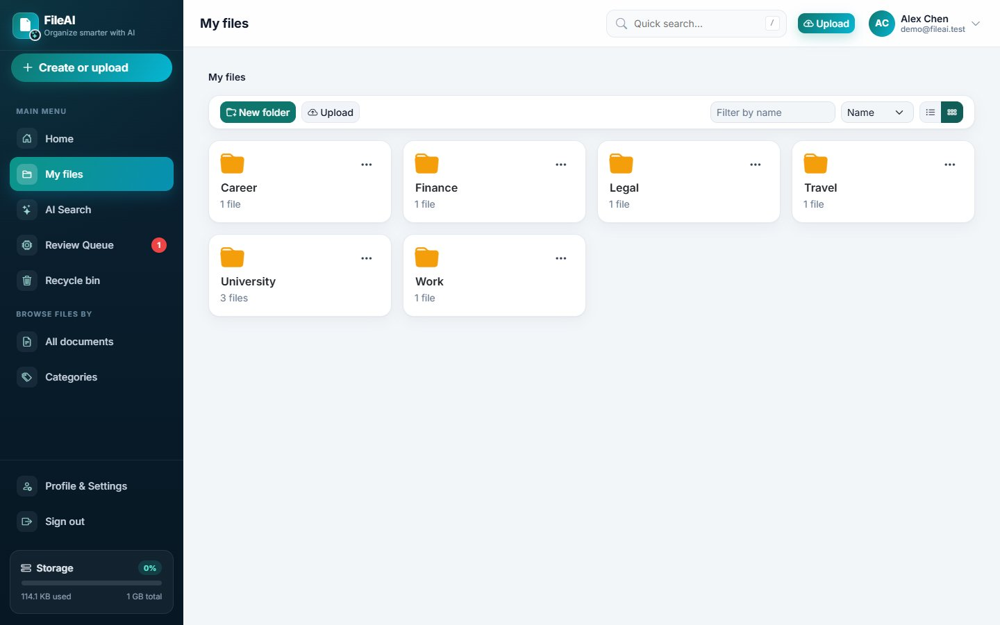
| Button | What it does |
|---|---|
| New folder | Creates a folder inside the folder you are in (or at the top level) |
| Upload | Opens the upload page |
| Summarise with AI | AI overview of the open folder and its subfolders (section 10) |
| Rename | Renames the open folder |
| Delete | Deletes the open folder and its subfolders — the documents inside go to the Recycle bin |
Every folder and file has a ⋯ button:
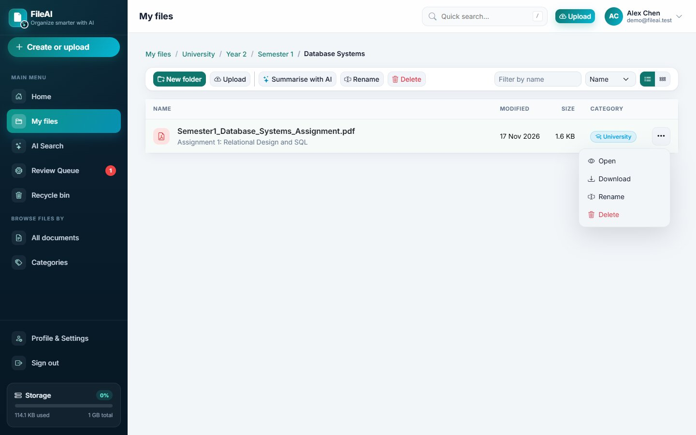
Choose Rename, type the new name and click Rename. File and folder names
cannot contain \ / : * ? " < > |, and two folders in the same place cannot have the same name.
Renaming a file keeps its type (for example .pdf).
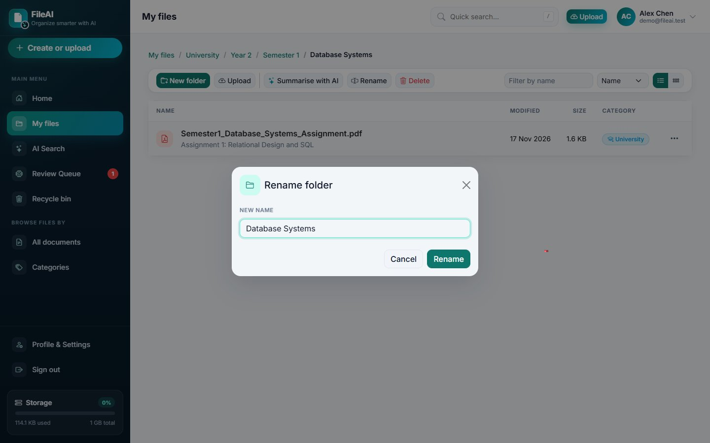
Deleting is safe: deleted files go to the Recycle bin and can be restored. When you delete a folder, the folder and its subfolders are removed and all the documents inside them go to the Recycle bin. FileAI always asks you to confirm first.
Not sure what is in a folder? Ask the AI. Click on a folder tile on Home, Summarise with AI in the ⋯ menu, or the Summarise with AI button inside a folder.
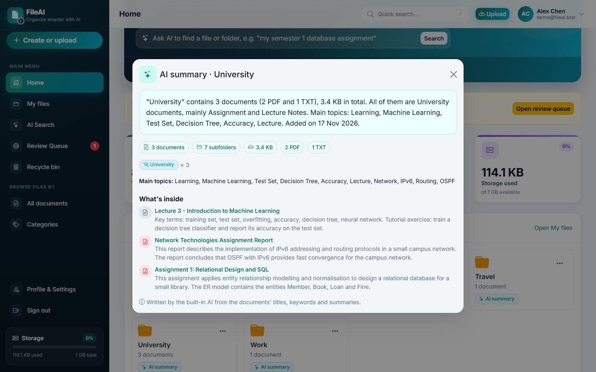
The summary covers the folder and all its subfolders:
Describe what you are looking for in plain English — you don't need the exact filename. Use the Ask AI box on Home, the quick search in the top bar, or in the menu.
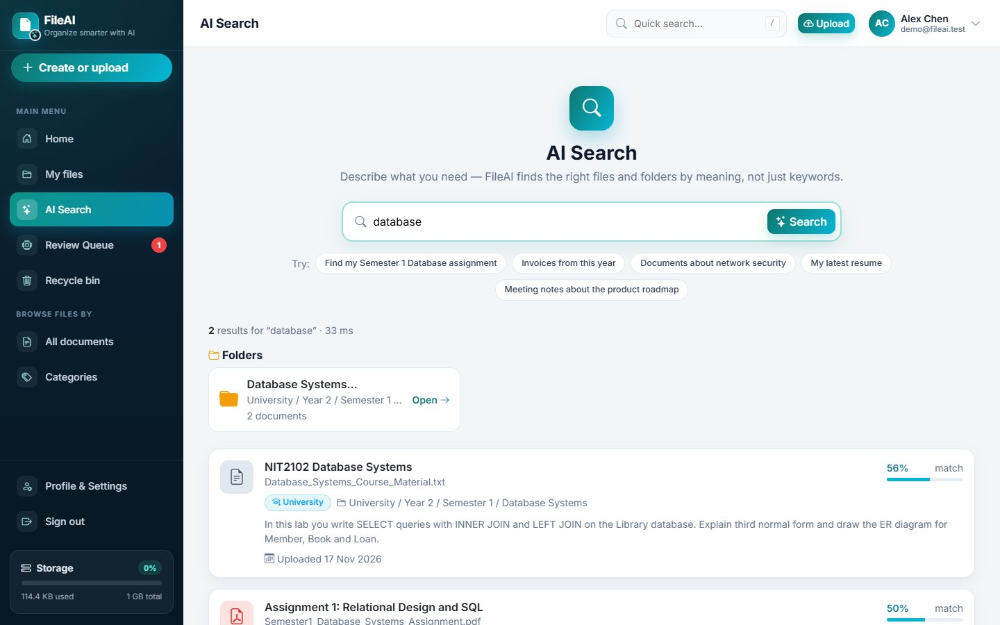
| Try | Finds |
|---|---|
| Find my Semester 1 Database assignment | Assignments for that unit and semester |
| invoices | The Finance / Invoices folder and your invoices |
| flight booking | Travel bookings and the folder they are in |
| my latest resume | Resumes in the Career folder |
Only documents you have approved are searched. Documents in the Review Queue or the Recycle bin are not shown.
Click any file to open its details page.
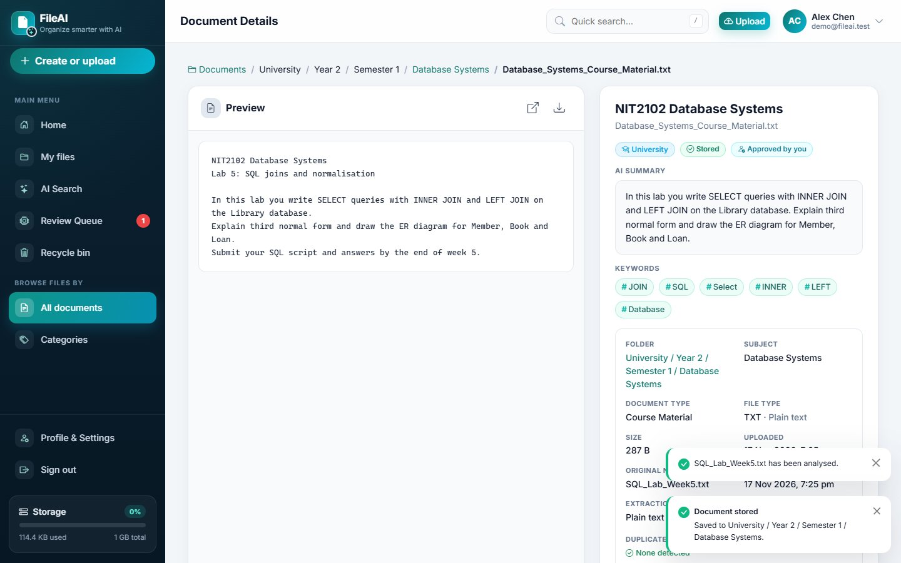
Deleted files are kept in the until you restore them or delete them for good — just like OneDrive.
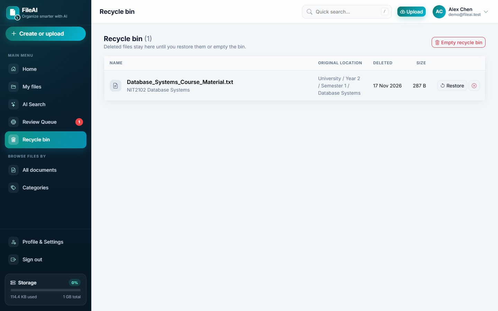
| Action | Result |
|---|---|
| Restore | The file goes back to the folder it was deleted from (Original location). If that folder was deleted too, it is created again. |
| ⊗ (Delete permanently) | Deletes that one file for good. |
| Empty recycle bin | Deletes everything in the bin for good. |
The lists uploads that are not saved yet: awaiting review, still processing, or failed. The red number in the menu shows how many need you.
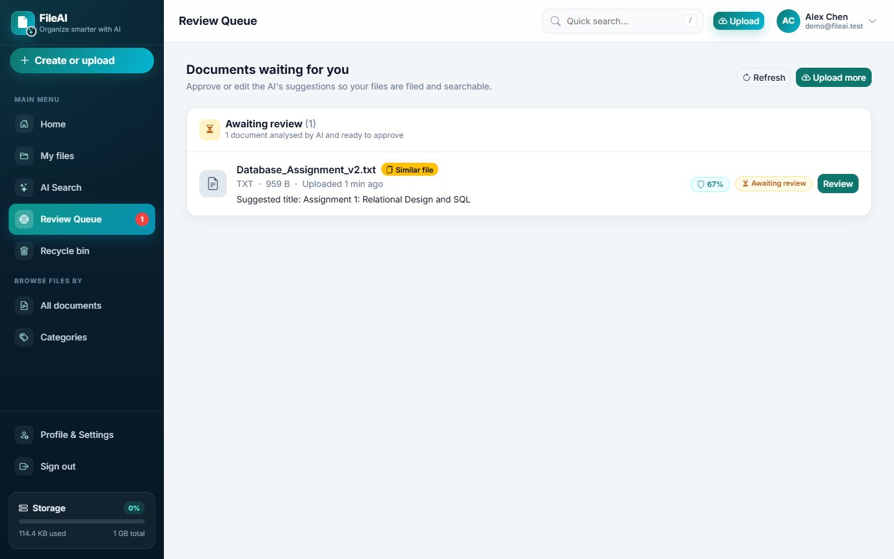
Open from the menu or from your name in the top-right corner.
| Problem or question | Answer |
|---|---|
| "Can't reach the FileAI server" | The backend is not running. Ask your administrator, or start it as described in the Student Guide. |
| I didn't get the sign-in code | Wait a minute and check junk/spam, then click Resend code. In demo mode the code is shown on screen. |
| "Too many failed sign-in attempts" | Wait 5 minutes and try again. |
| "Your session has expired" | You were signed out after 30 minutes. Sign in again. |
| The AI chose the wrong folder or category | Pick another option in AI suggested folder, or type your own before clicking Approve & Save. You can also Move or Edit it later. |
| A scanned document has no text | OCR may not be installed on the server, or the scan is unclear. Enter the details yourself. |
| I deleted something by mistake | Open the Recycle bin and click Restore. |
| I deleted a folder by mistake | Restore its documents from the Recycle bin — their folders are created again. |
| Search doesn't find my file | Only approved documents are searched. Check the Review Queue, then try other words (subject, type, company, semester). |
| Can other users see my files? | No. Each account can only see its own folders and files. |
| Storage is full | Delete files you don't need and empty the Recycle bin. |
| Term | Meaning |
|---|---|
| AI suggestion | A title, category, keywords, summary, filename or folder proposed by FileAI's AI. You can always change it. |
| AI confidence | How sure the AI is about the category (0–100%). Below 60% you are asked to double-check. |
| Breadcrumb | The path at the top of My files, e.g. My files / University / Year 2. |
| Duplicate | An identical copy (exact) or an edited version (similar) of a file you already have. |
| OCR | Optical Character Recognition — reading text from images and scanned documents. |
| Recycle bin | Where deleted files wait until they are restored or permanently deleted. |
| Review Queue | Uploads that have been analysed but not yet approved. |
| Two-step verification | Signing in with your password and a one-time code sent to your email. |